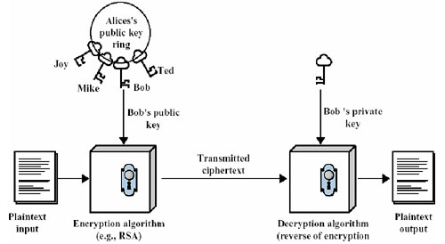

加密 - 将数据加密，使得数据即使被非法截获也无法破译，所以加密可以保护数据，重点在于数据的安全性。
认证 - 判断某个身份的真实性。确认身份后，系统才可以依不同的身份给予不同的权限，重点在于鉴别用户的真伪。
①一个公钥对应一个私钥。
②用公（私）钥加密，只有对应的那个私（公）钥才可以解密。
③公钥，可以让多人知道。私钥，不能告诉他人。
有两个用户Alice和Bob，Alice想把一段明文通过双钥加密技术发送给Bob，Bob有一对公钥和私钥，加/解密过程如下：
①Bob将他的公开密钥传送给Alice。
②Alice用Bob的公开密钥加密她的消息，然后传送给Bob。
③Bob用他的私人密钥解密Alice的消息。

有两个用户Alice和Bob，Alice想让Bob知道自己是真的Alice，而不是假冒的，整个身份认证的过程如下：
①Alice用她的私人密钥对文件加密，即对文件签名。
②Alice将签名后的文件传送给Bob。
③Bob用Alice的公钥解密文件，来验证签名。
使用ssh协议传输，包含：加密+认证。